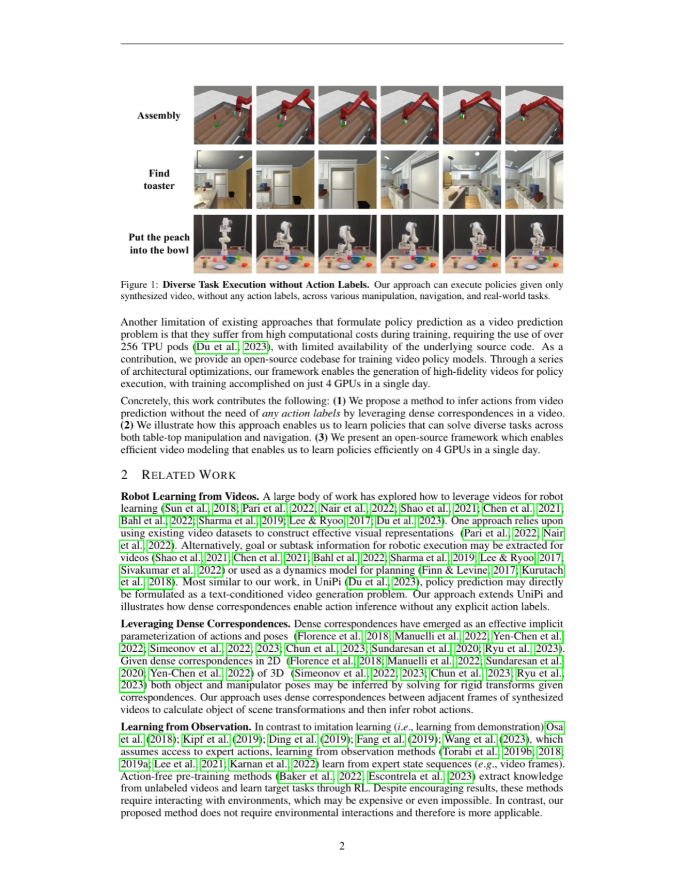
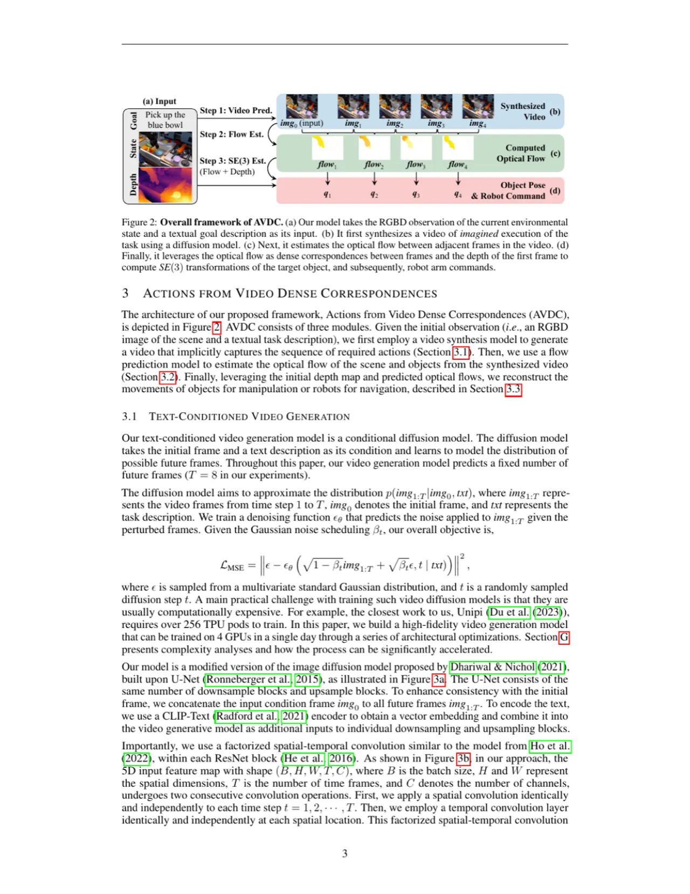
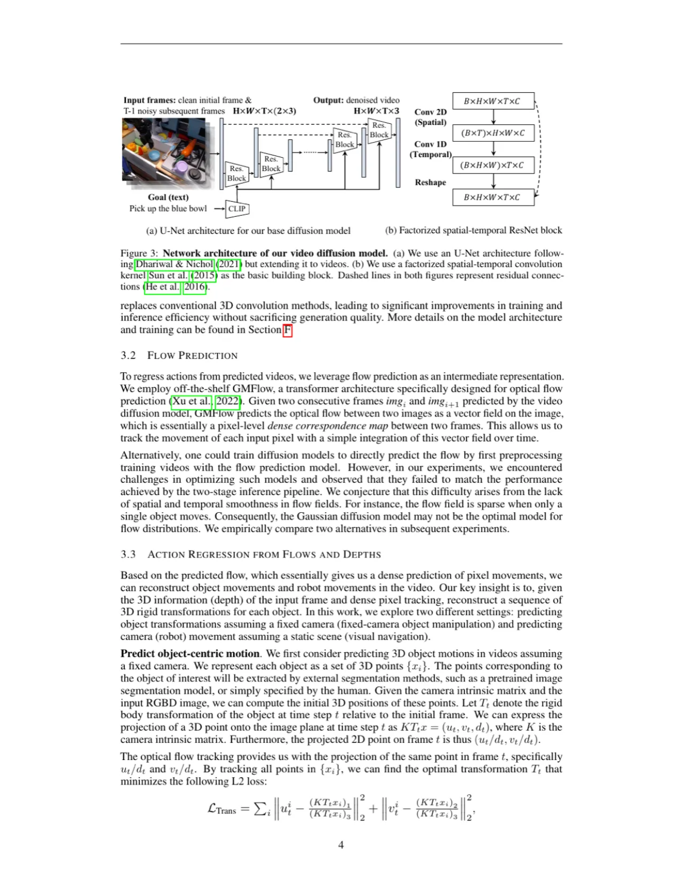
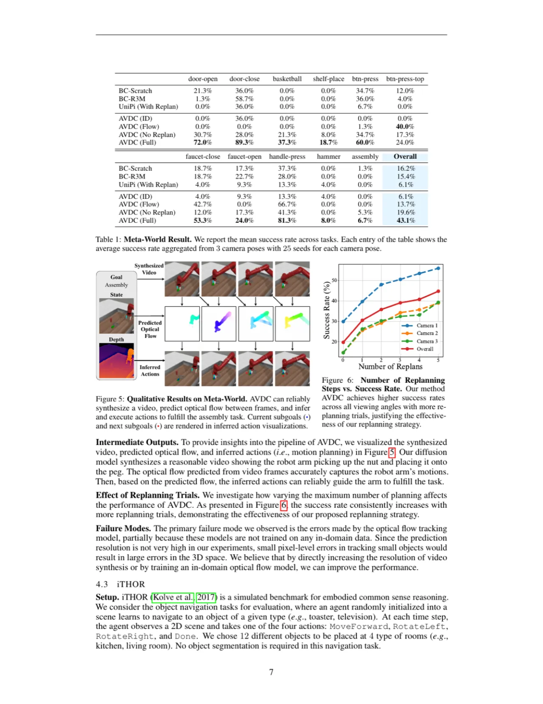
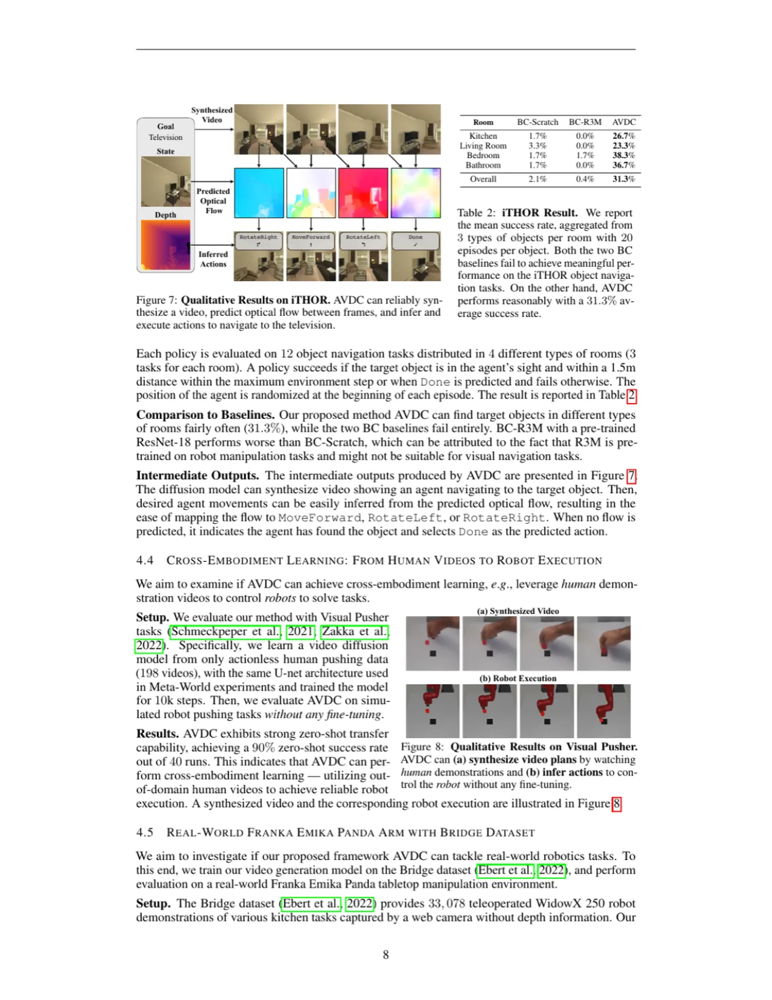

本文提出 AVDC（Actions from Video Dense Correspondences）：一种无需动作标注即可从 RGB 视频中学习机器人操控与导航策略的框架。系统利用视频扩散模型生成"想象执行"视频，再通过相邻帧间的稠密光流对应关系以闭合形式解算 SE(3) 变换，从而在无环境交互的情况下实现跨机器人平台的策略迁移。
机器人策略训练面临两大核心困难：其一，收集带动作标注的演示数据成本极高，且高度依赖特定平台；其二，仿真与真实环境的 sim-to-real gap 使得策略难以直接部署。互联网上已存在海量 RGB 视频，如果能直接从这些无动作标签的视频中学习策略，将大幅降低数据采集门槛并提升泛化能力。
"We present a method for training a robot policy capable of reliably executing diverse tasks across different robots and environments from RGB video demonstrations without any action annotation."

先前方法的局限性主要体现在两方面：
（1）基于逆动力学模型的方法（如 UniPi）需要知道精确步数，且通常以模态方式预测动作，训练开销大（需超过 256 TPU-pods）；
（2）行为克隆（BC）类方法依赖专家动作标注，无法直接利用互联网视频资源。
AVDC 的核心洞见是：图像本身即可同时编码状态与动作信息——相邻帧之间的稠密光流对应关系天然蕴含了物体运动轨迹，可以以闭合形式解算 SE(3) 变换，无需学习任何额外动作预测器。
AVDC 将策略执行解耦为三个阶段：（a）条件视频生成——用扩散模型合成从当前状态到目标的想象执行视频；（b）稠密光流估计——计算相邻帧的稠密对应关系；（c）动作回归——结合深度信息，以闭合形式将光流对应关系转化为 SE(3) 刚体变换，指导机器人执行。

本文使用以 U-Net（基于 Ho et al. 2019）为骨干的条件扩散模型，输入当前帧 f0 和文本目标描述，预测未来 F 帧序列。为提升时间一致性，在空间注意力中引入factorized spatial-temporal convolution（参考 Ho et al. 2022），使每帧在自身空间范围内同时与时间维度交互。推理时采用 DDIM 加速，仅需 10 步即可生成高保真视频（标准需 100 步）。

给定合成视频中相邻帧对 (imgt, imgt+1)，利用 off-the-shelf 光流估计器（如 RAFT）提取稠密对应关系。每个像素的光流向量编码了该点在下一时刻的位移，从而构成从当前帧到下一帧的稠密像素级映射。
这是 AVDC 的核心创新。给定深度图和稠密光流，可以将每个 3D 点的对应关系 (xt, x̂t+1) 提取出来，从而以闭合形式（closed-form）求解刚体变换 T = (R, t) ∈ SE(3)，最小化如下目标：
minR∈SO(3), t∈ℝ³ Σi ‖R·xt,i + t − x̂t+1,i‖²
对于操控任务（manipulation），系统先识别目标对象掩码，再仅在对象区域内计算变换，得到末端执行器的 pick-and-place 轨迹。对于导航任务（navigation），全帧光流被用来估计相机（即机器人底盘）的运动。整个动作推导无需学习任何参数，完全依赖几何约束，因此具有强大的跨平台迁移能力。
在执行过程中，机器人每完成一个子目标后，以新的当前观测作为条件重新运行视频生成和动作回归流程（replanning），以应对执行误差或环境变化。实验表明随着 replanning 次数增加，任务成功率单调上升（图 5）。
在三大基准上验证 AVDC：Meta-World（桌面操控仿真，11 任务，165 视频）、iTHOR（室内导航仿真，12 类目标，240 视频）、Bridge / Franka Panda（真实机器人，zero-shot 迁移）。基线包括行为克隆（BC-Scratch、BC-R3M）、UniPi 及 AVDC 各变体。
| 方法 | faucet-close | handle-pull | button-top | bin-picking | Overall |
|---|---|---|---|---|---|
| BC-Scratch | 1.3% | 0.0% | 0.0% | 0.0% | 低 |
| BC-R3M | 4.0% | 0.0% | 0.0% | 0.0% | 低 |
| UniPi | 21.3% | 6.7% | 14.7% | 0.0% | — |
| AVDC (Flow) | — | — | — | — | 中 |
| AVDC (Full) | — | — | — | — | 最优 |

在 iTHOR 室内导航基准上，AVDC 在 12 类目标物体上均表现出合理的导航成功率。系统以当前 RGBD 帧和目标对象名称为输入，在合成视频中追踪全帧光流以估算摄像机运动，并循环执行 replanning 直到到达目标区域。

在此实验中，AVDC 模型在包含 ~200 段人类手部推物视频的 Bridge 数据集上训练，然后零样本迁移到 Franka Emika Panda 机械臂。由于系统在动作推导上完全依赖几何对应关系而非具体动作标注，因此无需任何域适应即可直接部署。定性实验表明机械臂可以可靠跟随合成视频中的物体运动轨迹（图 9-10）。
当目标对象被机械臂自身或其他物体遮挡时，系统可能丢失对象的光流追踪，进而导致动作计算错误。论文指出："it may lose track of objects when they are occluded by the robot arm."
对于位移较大的物体或背景，光流预测精度下降，实际机器人执行时的 3D 变换解算误差会随之增大。论文提到 "the model can struggle in optical flow prediction under rapidly changing lighting conditions or large object movements in object poses."
当前实现中，对象掩码来自外部分割模型，抓取方向依赖预定义规则（top-grasp），尚不支持任意姿态抓取。集成更通用的操控模块（如抓取姿态预测、力传感器）是未来工作方向。论文指出集成 "various manipulation primitives such as grasp prediction modules (Sundermeyer et al., 2021) is important."
动作推导完全依赖合成视频的质量。若扩散模型生成的视频出现时间不一致或物理不合理的帧，下游光流估计和动作计算的质量也会受损。这是视频预测管线的固有局限，独立于动作回归模块。（inferred from the design）